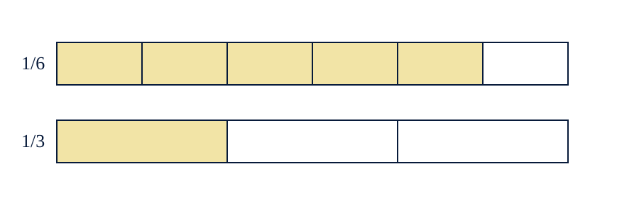

2nde S1 SUPPORTS Manipulation
2nde_S1_SUPPORTS_Manipulation
Séance 1 — Réparer le moteur de calcul
Nexus Réussite - Stage de pré-rentrée 2026-2027
Règles d’utilisation
- Imprimer en A4, éventuellement sur papier épais.
- Découper les cartes avant la séance.
- Ne distribuer l’aide qu’après une première tentative.
- Conserver la production initiale de l’élève pour la comparer à la reprise.
Activité « Deux calculatrices en désaccord »
Afficher :
−3+4×(−2)
et deux résultats proposés : (5) et (-11).
Consigne :
Sans recalculer immédiatement, explique quel résultat semble cohérent avec les signes.
Activité « La division qui retourne le mauvais nombre »
Comparer :
34÷25
avec :
43×25 et 34×52.
Consigne :
Quelle transformation conserve le sens de la division ? Vérifie avec une estimation.
Figures imprimables


Cartes à découper
| Carte | Texte à imprimer |
|---|---|
| PROPRIÉTÉ | Quelle propriété ou relation relie les données à ce que tu cherches ? |
| REPRÉSENTATION | Fais un schéma, un tableau, une droite ou un graphique avant de calculer. |
| CONTRÔLE | Ton résultat a-t-il le bon signe, la bonne unité et le bon ordre de grandeur ? |
| CONFIANCE | Je devine / j’hésite / je pense avoir juste / je peux expliquer. |
_Source pédagogique unique : `stage_prerentree_seconde_maths.md`. Les objectifs, l’ordre des séances et les diagnostics ne sont pas modifiés ; ils sont déclinés ici en supports opérationnels._